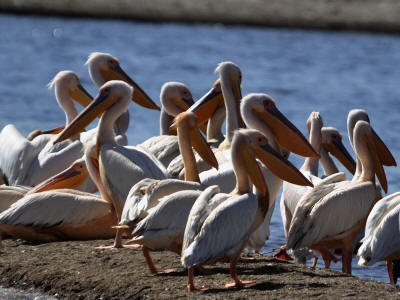
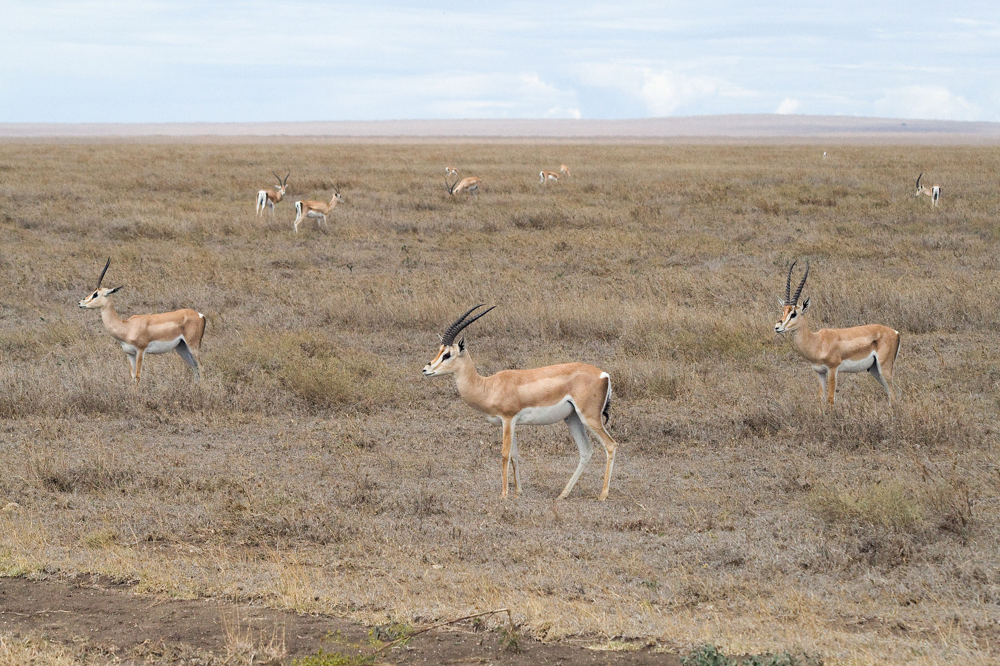
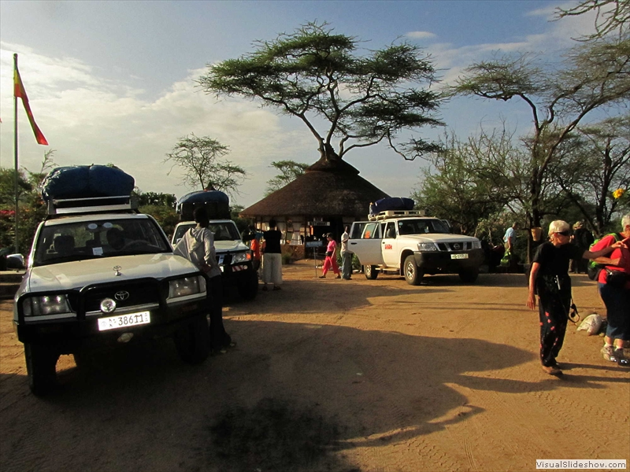
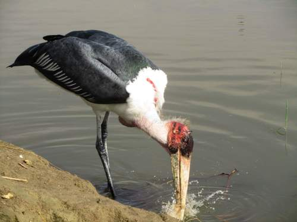
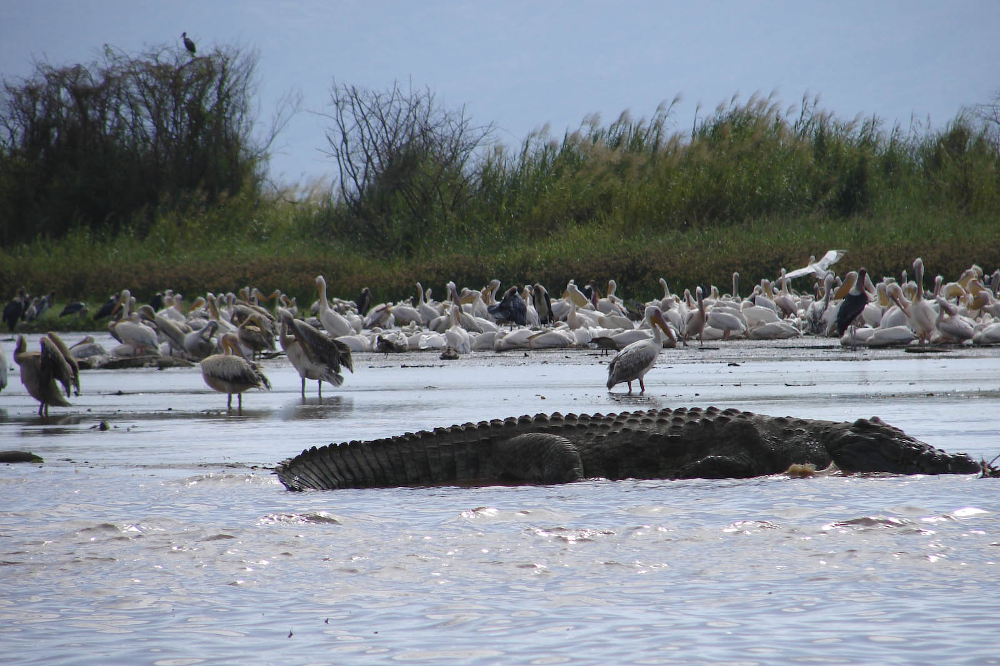

Nechisar National Park
   Nechisar National Park is in southwest Ethiopia. Its varied terrain spans escarpments, swamps, and forest. Zebras and gazelles roam the vast savannahs of the Nechisar Plains. The large, brown-red Lake Abaya sits on the north side of the mountainous "Bridge of God" isthmus. To the south is Lake Chamo, known for its big Nile crocodiles. The Park is home to many birds, including the rare
Description
Established: 1974
Area: 398 mi²
As part of a 1960s UNESCO plan to protect and conserve nature and natural resources in Ethiopia, a two person team of UNESCO consultants spent three months surveying most major wildlife areas in Ethiopia, and officially submitted to the Wildlife Conservation Board in 1965 their recommendations, which included a game reserve to the east of Lake Chamo to provide protection for the population of Swayne's hartebeest and other local wildlife.
Nechisar National Park was proposed in 1967, then officially established in 1974. Following the recommendations of the Ethiopian Ministry of Agriculture recommendation, in 1982 the local Guji, who had been living as pastoralists in the lowlands beside Lake Abaya and Chamo "were forcibly evicted from the park at gun point".
Lake Chamo
In the lawless period at the end of the Derg rule and immediately afterwards, Nechisar suffered much damage. Park buildings located far from the headquarters were looted and damaged. At the same time, the local Guji returned to their traditional grazing areas. According to one source, they fled there from the attacks of the Borena Oromo, who in turn were victimized by neighboring ethnic groups, their presence degrading the environment and contributing to the local extinction of many species. The Guji also acquired firearms during this period and used them to resist eviction from the park afterwards. In 2005, Refugees International criticized their eviction. In 2005, the management responsibility for Nechisar National Park was handed over to APN.
While tourism in Ethiopia has increased in the park in recent years, doubling each year from 5300 tourists in 2005 to 20,500 in 2007, in October 2008 APN announced that they were ending management of Nechisar National Park. In a magazine article reprinted on their website, APN claims that sustainable management of the Ethiopian parks is incompatible with "the irresponsible way of living of some of the ethnic groups". African Parks added that the emphasis for resettling inhabitants out of the park, rather than educating them to work with them, came from the Ethiopian government. APN was told that the Guji were an Oromo people, and "they belong in the adjoining Oromiya province, not among the Gamo and Gofa peoples of the Southern District, where the park is".